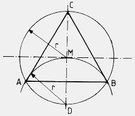
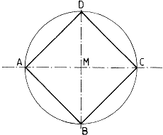
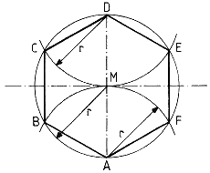
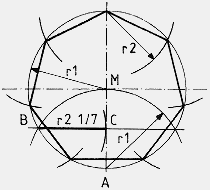
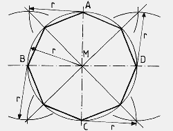
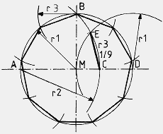
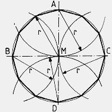

Geometrie
Zeichnerische Konstruktion von Mehrecken
Übersicht
Grundvoraussetzung für die zeichnerische Konstruktion von Mehrecken ist die Anlage eines "Fadenkreuzes" und eines Kreises, wie in den hier gezeigten Beispielen dargestellt. Möglich ist grundsätzlich auch eine mathematische Konstruktion mittels Teilung des Kreises.
Beispiel: man will ein Fünfeck haben und teile zu dem Zwecke 360° (voller Kreis) durch die fünf Ecken und erhalte einen Winkel von Ecke zu Ecke von 72°. Bleibt nur noch die Übertragung auf die Zeichnungsunterlage. Und genau dieses kann mit den im Schreibwarengeschäft erhältlichen Winkelmessern sehr ungenau werden. Ein guter Zirkel kann aber schon mal Radien von mehreren Dezimetern greifen, und wenn ein Solcher nicht zur Hand ist, kann man einen Zirkel mit etwas gutem Willen, einem Bindfaden, einem Stift und einer Nadel simulieren. Und ein Lineal findet sich immer, auch wenn es eigentlich ein Brett ist.
Inhalt
- das Dreieck
- das Viereck
- das Fünfeck
- das Sechseck
- das Siebeneck
- das Achteck
- das Neuneck
- das Zehneck
- das Elfeck
- das Zwölfeck
- die Universalmethode
Das Dreieck
...ist augenscheinlich eine einfache Konstruktion. Im dargestellten Beispiel wird gegenüber der festgelegten Spitze im Punkt C mit dem Kreisradius r ein Kreisbogen geschlagen, der an zwei Stellen den Kreis schneidet, und so die Punkte A und B ergibt.
Das Viereck
...wird nur über die Schnittpunkte des Fadenkreuzes mit dem Kreis, A, B, C, D, konstruiert
Das Fünfeck
 ...wird über die Strecke C, D konstruiert. Dazu wird die Strecke zwischen A und M mittels des Kreisradius r1 halbiert. Vom dabei entstehenden Punkt B greife man die Str cke nach D, also r2, und trage diese mit dem Zirkel auf die waagerechte Linie des Fadenkreuzes ab, wobei man den Punkt C erhält. Diese Strecke, hier auch r3, wiederum mit dem Zirkel gegriffen ist die benötigte Konstruktionsstrecke.
...wird über die Strecke C, D konstruiert. Dazu wird die Strecke zwischen A und M mittels des Kreisradius r1 halbiert. Vom dabei entstehenden Punkt B greife man die Str cke nach D, also r2, und trage diese mit dem Zirkel auf die waagerechte Linie des Fadenkreuzes ab, wobei man den Punkt C erhält. Diese Strecke, hier auch r3, wiederum mit dem Zirkel gegriffen ist die benötigte Konstruktionsstrecke.
Das Sechseck
...wird mit dem Kreisradius r von den Punkten A und D aus konstruiert. Dabei ergeben sich die Punkte B, C, E und F. Nun müssen diese sechs Punkte nur noch miteinander verbunden werden.
Das Siebeneck
...wird vom Punkt A aus über die Seitenhalbierende mit dem Kreisradius r1 konstruiert. Die Hälfte der dabei entstehenden Strecke ist die benötigte Strecke B, C, hier auch r2. Diese, von Schnittpunkt zu Schnittpunkt gegriffen, ergeben die Eckpunkte des Siebenecks.
Das Achteck
...wird mittels der Winkelhalbierenden konstruiert. Diese werden mit dem Kreisradius r von den Punkten A, B, C und D abgetragen. Werden die sich gegenüberliegenden Schnittpunkte diagonal durch den Mittelpunkt des Kreises M miteinander verbunden, sind alle acht Konstruktionspunkte erstellt. Mit dieser Technik läßt sich auch ein rechter Winkel halbieren.
Das Neuneck
...bedarf nur zweier Zirkelschläge zur Konstruktion. Von Punkt D aus wird mit dem Kreisradius r1 ein Bogen in das Innere des Kreises gezeichnet, hernach wird der Abstand zwischen den Punkten A und B in die Zirkelspanne genommen, was hier r2 entspricht und ein Bogen von Punkt B auf die Waagerechte des Fadenkreuzes geschlagen. Die Strecke zwischen den dabei entstehenden Punkten D und E entspricht dem gesuchten Neuntel.
Das Zehneck
 ...wird über die Seitenhalbierende zwischen A und M mit dem Kreisradius r1 konstruiert, wobei man Punkt B erhält. Von diesem Punkt aus die Spanne zu Punkt C mit dem Radius r2 auf die Waagerechte des Fadenkreuzes abgetragen ergibt Punkt D. Der Abstand der Punkte D und M, hier auch r3, ist die Konstruktionsstrecke.
...wird über die Seitenhalbierende zwischen A und M mit dem Kreisradius r1 konstruiert, wobei man Punkt B erhält. Von diesem Punkt aus die Spanne zu Punkt C mit dem Radius r2 auf die Waagerechte des Fadenkreuzes abgetragen ergibt Punkt D. Der Abstand der Punkte D und M, hier auch r3, ist die Konstruktionsstrecke.
Das Elfeck
 ...ist in dieser Auflistung ein Sonderfall. Es wird mit der Universalmethode konstruiert. Dabei wird in einem beliebigen Winkel von Punkt A aus eine Gerade gezeichnet und in elf gleiche Teile geteilt. Eine nähere Beschreibung des Vorgangs finden Sie an anderer Stelle. Diese Punkte werden mittels der Parallelverschiebung auf die Senkrechte des Fadenkreuzes übertragen. Mit dem doppelten Kreisradius r2 werden von den Punkten A und D Kreisbögen geschlagen, die die Punkte B und C ergeben. Von diesen Punkten wird jeweils jeder zweite Punkt der Elferteilung auf der Strecke A, D auf den gegenüberliegenden Halbbogen des Kreises übertragen. Somit sind alle Konstruktionspunkte da.
...ist in dieser Auflistung ein Sonderfall. Es wird mit der Universalmethode konstruiert. Dabei wird in einem beliebigen Winkel von Punkt A aus eine Gerade gezeichnet und in elf gleiche Teile geteilt. Eine nähere Beschreibung des Vorgangs finden Sie an anderer Stelle. Diese Punkte werden mittels der Parallelverschiebung auf die Senkrechte des Fadenkreuzes übertragen. Mit dem doppelten Kreisradius r2 werden von den Punkten A und D Kreisbögen geschlagen, die die Punkte B und C ergeben. Von diesen Punkten wird jeweils jeder zweite Punkt der Elferteilung auf der Strecke A, D auf den gegenüberliegenden Halbbogen des Kreises übertragen. Somit sind alle Konstruktionspunkte da.
Das Zwölfeck
...ist wieder eine einfache Konstruktion. Von den Punkten A, B, C und D wird mit dem Kreisradius r jeweils ein Kreisbogen auf den Kreis geschlagen, wobei sich alle nötigen Konstruktionspunkte ergeben. Für die Konstruktion einer Ellypse kann das Zwölfeck als Konstruktionshilfe dienen. Ein Ausschnitt dieser Konstruktion ist als Drittelung des rechten Winkels wiederzufinden.
Die Universalmethode
...vermag auch zeichnerisch nicht anders darstellbare n-Ecke zu konstruieren. Ein Beispiel ist das obige Elfeck. Die Einteilung der Senkrechten des Fadenkreuzes erfolgt, wie ebenda kurz erklärt, durch einen Strahl, der ausgehend von einem Schnittpunkt der Senkrechten mit dem Kreis, nehmen wir den Oberen, in beliebigem Winkel zur Senkrechten von ihr fortführt.
Auf diesem Strahl lassen sich nun mit einem Lineal oder einem Zirkel die jeweils erforderliche Anzahl an Unterteilungen aufbringen. Das Maß der Teilung muß natürlich gleich sein, der Betrag der Teilung (z.B. in mm) ist unerheblich. Will sagen, ob mit 8 mm oder 13,5 mm ist Irrelevant, wichtig ist daß ich das erwählte Maß durchgängig benutze und nicht zwischendurch ändere. Nähere Beschreibung des Vorgangs hier.
Hernach wird mit einer Geraden zuerst der letzte Punkt der Einteilung des Strahls mit dem unteren Schnittpunkt der Senkrechten mit dem Kreis verbunden und sodann die anderen Teilungspunkte des Strahls mittels der Parallelverschiebung auf die Senkrechte abgetragen.
Damit erhalten wir eine gleichmäßige Unterteilung der Senkrechten des Fadenkreuzes. Mit den Halbkreisbögen von den Oberen und Unteren Schnittpunkten der Senkrechten mit dem Kreis, siehe Elfeck, erhalten wir die zwei Punkte, von denen aus jede Zweite, der auf der Senkrechten abgetragenen Unterteilungen, auf die dem Punkt gegenüberliegende Seite des Kreises abgetragen werden muß. Die Punkte auf dem Kreis müssen dann nur noch der Reihe nach miteinander verbunden werden.
Mit dieser, zugegebener Maßen, etwas kompliziert wirkenden Methode, lassen sich beliebige n-Ecke konstruieren. Wenn n allerdings einstellig ist, sollte die dafür jeweils konkretere Lösung bevorzugt werden.